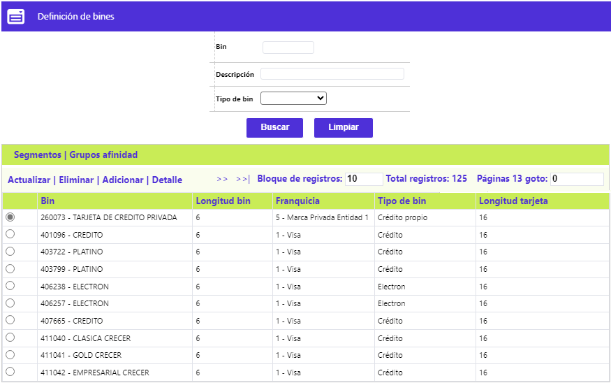
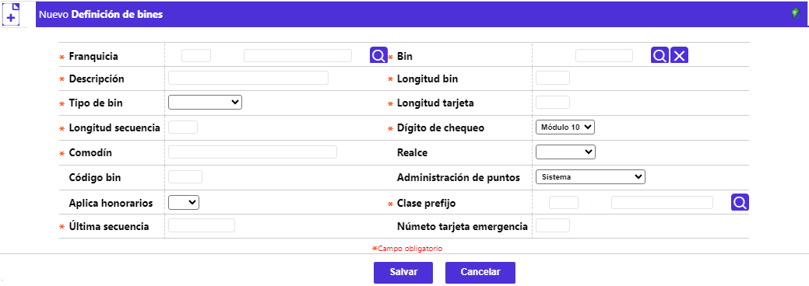
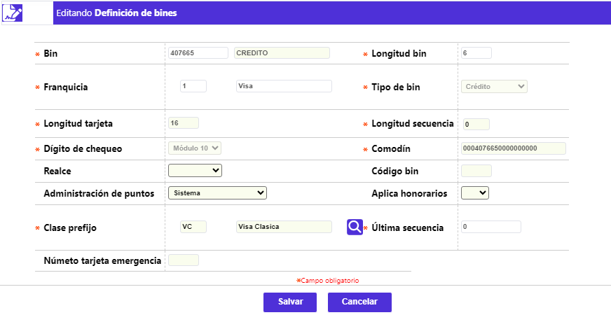
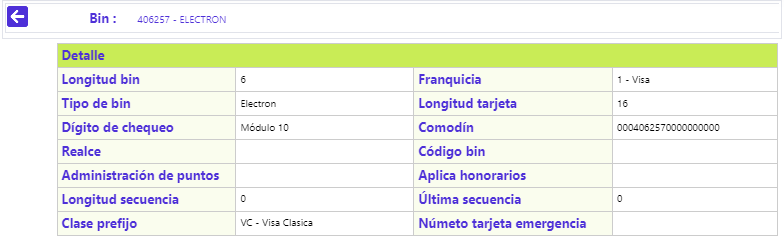

Definición de bines
Esta opción permite parametrizar las características de los tres componentes de la combinatoria de cada producto: Bin, Segmento y Grupo de afinidad, tanto los licenciados por las franquicias como los de marca privada, sin que exista dependencia alguna entre ellos tres. Además de: Actualizar, Eliminar, Adicionar y Detalle, el formulario cuenta con otros tres enlaces: Segmentos, Grupos de afinidad, y Tarjetas restringidas.

Bines: En esta primera parte de la funcionalidad, se ingresan manualmente los prefijos o bines a utilizar por la entidad, basándose en la información contenida en la opción Bines nacionales de la ruta Núcleo / Configuración de parámetros / Parámetros de negocio.
Adicionar: Al activar ese enlace se despliega un formulario con los siguientes campos:

Franquicia |
En este campo obligatorio, se selecciona de la lista de valores la marca o Franquicias a la cual pertenece el código o prefijo. |
Bin |
Campo obligatorio, cuenta con lista de valores adjunta filtrada por la Franquicia, de la que debe seleccionarse el prefijo o Bin a parametrizar. |
Descripción |
Campo obligatorio, se diligencia automáticamente una vez seleccionado el dato del campo anterior, acorde a lo parametrizado en el formulario Bines nacionales. |
Longitud bin |
Campo numérico de un dígito, obligatorio, se diligencia automáticamente una vez seleccionado el dato del campo Bin, acorde a lo parametrizado en el formulario Bines nacionales. |
Tipo de bin |
Campo que posee lista de valores adjunta, obligatorio, cuyo dato determina la característica de operación del Bin, se diligencia automáticamente una vez seleccionado el dato del campo Bin, acorde a lo parametrizado en el formulario Bines nacionales. |
Longitud tarjeta |
Campo numérico de dos dígitos, obligatorio, que ilustra la cantidad total de dígitos que componen el número de la tarjeta, se diligencia automáticamente una vez seleccionado el dato del campo Bin, acorde a lo parametrizado en el formulario Bines nacionales. |
Longitud secuencia |
Campo numérico de dos dígitos, obligatorio, que ilustra la cantidad de dígitos que haciendo parte de la tarjeta, corresponden a la secuencia de emisión de cada una de ellas, se diligencia automáticamente una vez seleccionado el dato del campo Bin, acorde a lo parametrizado en el formulario Bines nacionales. |
Dígito de chequeo |
Campo obligatorio, que posee lista de valores adjunta, ilustra la rutina que calcula el último dígito de la tarjeta o de verificación, se diligencia automáticamente una vez seleccionado el dato del campo Bin, acorde a lo parametrizado en el formulario Bines nacionales. |
Comodín |
En este campo alfanumérico de 23 dígitos, obligatorio, ilustra un número genérico que permite la captura de movimiento cuando el número de la tarjeta no es legible en los comprobantes manuales (si aplica), se diligencia automáticamente una vez seleccionado el dato del campo Bin, acorde a lo parametrizado en el formulario Bines nacionales. |
Realce |
Campo que posee lista de valores adjunta (Local o Franquicia), no obligatorio, indica si el realce de los plásticos lo lleva a cabo la entidad con sus proveedores o directamente la franquicia. |
Código bin |
Campo no obligatorio, numérico de dos dígitos, en el que se registra el código del prefijo (BIN), utilizado por algunas entidades para poder diferenciar los registros correspondientes en el archivo de Débitos automáticos. |
Administración de puntos |
Campo que aplica cuando existen esquemas de puntaje en la entidad, y permite indicar si la administración de dichos puntos está a cargo del sistema o es la franquicia quien se encarga de ello, como es el caso del producto Platinum; en caso de no existir programas de puntajes o millas para el producto, la opción a elegir debe ser No se manejan puntos. |
Aplica honorarios |
En este campo la entidad define, por producto, si dentro de los saldos adeudados por el cliente, se le incluye lo correspondiente a Honorarios de abogado cuando la obligación ha estado o se encuentra actualmente en cobro prejurídico o jurídico. |
Clase prefijo |
Campo obligatorio, posee lista de valores poblada a través de la opción Franquicias, de la que debe seleccionarse la clase de prefijo a la que corresponde el bin que se ha definido. |
Última secuencia |
Campo obligatorio, en el que debe diligenciarse el último número de tarjeta asignado para ese bin, y a partir del cual el sistema generará los subsiguientes números de tarjeta. |
Número tarjeta emergencia |
Campo que permite definir la cantidad de tarjetas que la entidad se reserva o requiere mantener como stock, por cada producto, para ser utilizadas en el exterior con características propias de tarjetas de emergencia. |
Actualizar: Al activar ese enlace se despliega un formulario en el cual los únicos campos modificables son: Realce, Código bin, Administración de puntos, Aplica honorarios, Clase prefijo y Número tarjeta emergencia.

Detalle: Al activar ese enlace se despliega el siguiente formulario:
